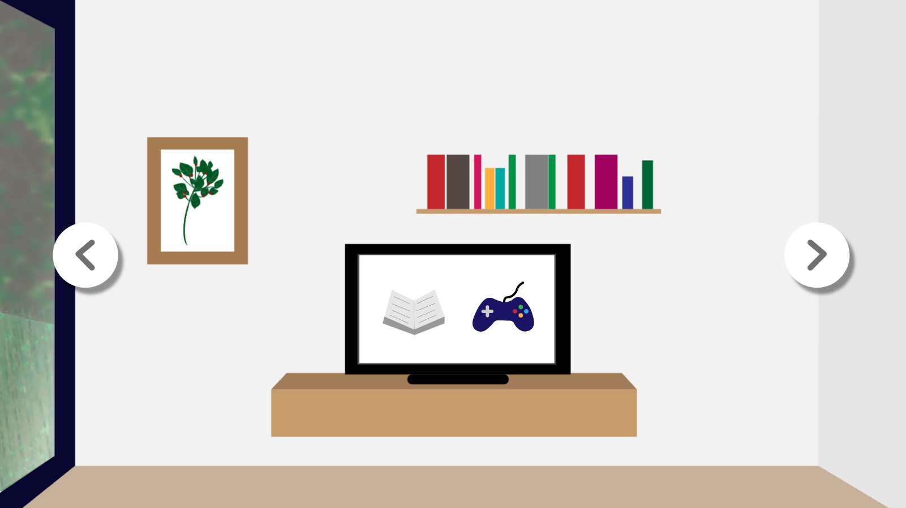

Voor ontwerpen 3 was de opdracht om een site te maken op basis van een artikel, foto, video of audiofragment. Ik had gekozen voor een artikel van de Correspondent over de mogelijkheden van Virtual Reality. De belangrijkste punten en de boodschap heb ik verwerkt in een prototype dat ik in Adobe XD heb gemaakt. Officieel begint het prototype met een video van iemand die een VR bril opzet en eindigt hij met hem weer afdoen. Helaas kan je geen video's toevoegen aan XD dus dit is alleen te zien in de video voor de leraren. Ook heb ik de animaties in Adobe Premiere toegevoegd dus ook die zijn hier niet te zien.
Klik op de afbeelding om het prototype te bekijken
Mijn visie: Als onderwerp heb ik voor een artikel van De Correspondent gekozen. Het gaat over het heden en de toekomst van Virtual Reality en dit was een onderwerp wat mij erg interesseerde. Ik heb gekozen voor een vormgeving die lijkt op een spelletje, een cartoon achtige omgeving. Hiermee wilde ik laten zien dat dit prototype zich in VR afspeelt zonder het ook echt te maken, ook geeft het een wat vrolijkere sfeer met zich mee. De illustratiestijl is heel eenvoudig en dit is om een globale indruk te geven van de virtuele ruimte en om de aandacht te vestigen op de objecten die belangrijk zijn en waar meer informatie over te krijgen is. Het is een game die je tijdens het proces een boodschap meegeeft.
Er komt niet heel veel terug van de vormgeving van de Correspondent en dat is, omdat dit niet de focus is en niet veel bijdraagt aan het concept. Het lettertype is wel van de site om toch nog enigszins een link te leggen. De boodschap probeer ik ook over te brengen door middel van de illustraties, je bevindt je in een leuk klein kamertje met verschillende items die je wat vertellen over de situatie. De tekst is er om het wat verder uit te leggen.
Ik vind dat een ontwerp goed is al het simpel is en nog steeds de boodschap goed over kan brengen. Ook moet er voor dit soort dingen een speels element in zitten om de aandacht goed vast te houden.